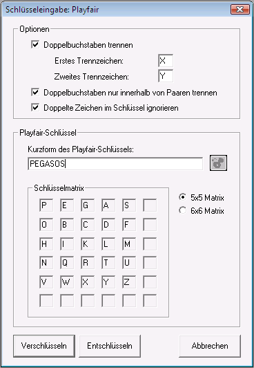

Das Playfair-Verschlüsselungsverfahren arbeitet nach einem Algorithmus von Charles Wheatstone (1854). Das folgende Beispiel soll die Funktionsweise von Playfair erläutern:
Man benötigt zunächst ein Schlüsselwort (im Weiteren wird das Wort "PEGASOS" verwendet). Dieses Schlüsselwort wird mit Hilfe des Dialogs Schlüsseleingabe Playfair in eine 5x5- oder 6x6-Matrix eingetragen.
Die übrigen Zellen der Matrix werden dann mit den restlichen Zeichen des Alphabets aufgefüllt. Schon eingesetzte Buchstaben werden dabei weggelassen, da jedes Zeichen des Alphabets nur einmal verwendet werden kann.
Das Playfair-Alphabet besteht aus 26 Buchstaben (A bis Z). Im Fall der 5x5-Matrix wird im Alphabet das J weggelassen, im Fall der 6x6-Matrix wird das ursprüngliche Alphabet um Ziffern erweitert (0 bis 9).

Die Nachricht, die verschlüsselt werden soll, wird zuerst vorformatiert, d.h. Kleinbuchstaben werden in Großbuchstaben umgewandelt und Nicht-Alphabetzeichen werden entfernt.
Danach wird das Ergebnis in Blöcken von je zwei Buchstaben (Digramme) aufgeschrieben. Wir benutzen als zu verschlüsselnden Beispiel-Text:
AL LE SI ST HE RA US FL IE HE SO FO RT.
Zum Verschlüsseln nimmt man nun das erste Buchstabenpaar AL. Diese beiden Buchstaben bilden in der Tabelle die Endpunkte der Diagonalen eines Rechtecks (A-L von unten nach oben). Die Endpunkte der anderen Diagonalen (auch von unten nach oben gelesen) sind die Punkte P und M. Also wird das Buchstabenpaar AL durch das Paar PM ersetzt. Aus LE wird XR. Probleme gibt es bei dem Paar ST, da beide Buchstaben in der gleichen Zeile stehen. In diesem Fall nimmt man jeweils den Buchstaben rechts davon - TW. Steht links davon kein Buchstabe mehr, dann geht man einfach wieder an das Ende der Zeile. Stehen die Buchstaben eines Paares in der Tabelle übereinander wie beim Paar FL, so nimmt man jeweils die nächsten Buchstaben darunter - LY. Die verschlüsselte Botschaft lautet dann:
PM XR TH TW KB UP BA LY KC KB TP KP CP
Um die Sicherheit zu erhöhen, kann man vor dem Verschlüsseln Zeichenverdopplungen durch Einfügen von zum Beispiel X auflösen, da diese eine leichte Angriffsmöglichkeit bieten.
Durch die Verwendung von Zeichenpaaren ist das Brechen des Algorithmus schwieriger im Vergleich zu Verfahren, die nur einzelne Zeichen verwenden. So ist zum Beispiel eine Häufigkeitsanalyse weniger aussagekräftig und das Erstellen von Codebüchern aufwändiger. Moderne Verfahren benutzen deshalb nicht nur zwei Zeichen pro Block, sondern arbeiten wie etwa IDEA auf 64 Bit (also 8 Zeichen)-Blöcken.
Ein ausführliches Beispiel zum Playfair-Verschlüsselungsverfahren befindet sich im Kapitel Szenarien.